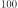
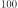
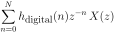
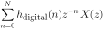
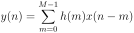

Next: Generally FIR filters do Up: Causal Signal Processing Previous: Frequency response of a Contents
 of an
analogue filter? Let's find out:
If we transform it to the Laplace space it looks like this:
Remember that  has a very handy meaning: it is a delay
by the unit time step (Eq. 80).
Thus
of an
analogue filter? Let's find out:
If we transform it to the Laplace space it looks like this:
Remember that  has a very handy meaning: it is a delay
by the unit time step (Eq. 80).
Thus  is a delay by
is a delay by  time steps.
We can rewrite Eq. 103:
This is the z-transform of the impulse response of the filter.
time steps.
We can rewrite Eq. 103:
This is the z-transform of the impulse response of the filter.
We filter now the signal  with
with  :
:
This sum is a direct recipe how to filter the signal . We only
need the impulse response of the filter  and we can
set up a digital filter (see Fig. 16). Of course
in practise this impulse response cannot run till infinity
but only for a limited number of samples. These are often
called “taps”. So for example a filter with  samples of has
“taps”. This in turn then requires a delay line which
can hold samples:
and we can
set up a digital filter (see Fig. 16). Of course
in practise this impulse response cannot run till infinity
but only for a limited number of samples. These are often
called “taps”. So for example a filter with  samples of has
“taps”. This in turn then requires a delay line which
can hold samples:
This is the formula of an Finite Impulse Response filter where we have
sampled an analogue impulse response at time intervals of  .
However, usually the impulse response of the filter is directly derived
in the digital domain where the argument of
.
However, usually the impulse response of the filter is directly derived
in the digital domain where the argument of  represents just the sample
index and the sampling interval is implicitly the inverse of the sampling
rate. For that reason one needs to distinguish between:
represents just the sample
index and the sampling interval is implicitly the inverse of the sampling
rate. For that reason one needs to distinguish between:
Eq 107 is the filter where the impulse response is based on an analogue
filter and Eq. 108 is based on the impulse response originating from a digital filter
design (see section 6.7.6 and 6.7.7) where the frequencies
are normalised frequencies from  to  . From now on we will
always refer to the “digital” one (Eq. 108) and the subscript will be
omitted (Eq. 109 & Fig. 17).
. From now on we will
always refer to the “digital” one (Eq. 108) and the subscript will be
omitted (Eq. 109 & Fig. 17).
In the time domain the FIR filter is then doing the following operation:
 (
( (
(![\includegraphics[width=\linewidth]{fir_digital}](img274.svg)